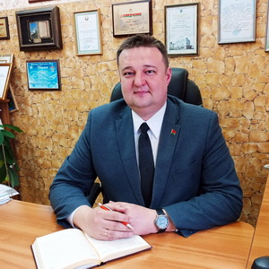
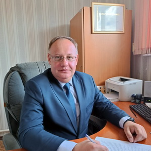

МИНСКИЙ ЗООПАРК
Сотрудники
Директор Минского зоопарка
Сафронов Александр Николаевич
+375 (17) 355-21-78
График личного приема граждан, юридических лиц, индивидуальных предпринимателей директором Минского зоопарка каждая среда месяца: 14:00 – 17:00 (предварительная запись по телефону +375 (17) 242-21-75)
*при временном отсутствии в день личного приема директора, прием осуществляет заместитель директора Кастюк Андрей Николаевич
+375 (17) 355-21-78
Сотрудники
Заместитель директора Минского зоопарка
Кастюк Андрей Николаевич
+375 (17) 379-47-87
Гончаров Юрий Владимирович – главный инженер +375 (17) 378-62-86
Ляхович Светлана Анатольевна – главный бухгалтер +375 (17) 250-68-72
Шурман Елена Эдуардовна – специалист по кадрам +375 (17) 272-43-85
Масляк Ирина Васильевна – начальник просветительского отдела +375 (17) 303-56-20
Ильясова-Кононова Татьяна Сергеевна – начальник зоотехнического отдела +375 (17) 378-77-81
Тимашкова-Красовская Алевтина Геннадьевна – ведущий зоотехник +375 (29) 693 71 07
Кудрявцева Кристина Геннадьевна – секретарь +375 (17) 242-21-75
VSU Shpakova Y.A. 2023